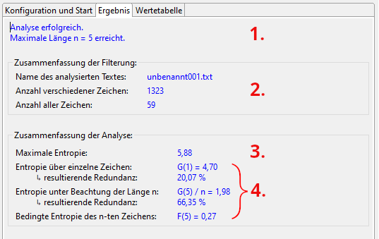
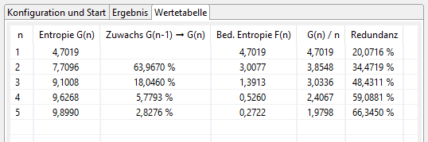

Das Entropie-Analyse Plug-in berechnet den Wert der Entropie nach Claude Elwood Shannon [1]. In der JCrypTool-Implementierung wird als Alphabet die Menge der im Text beobachteten Zeichen verwendet.
Die Entropie eines Dokuments ist eine Kennzahl für dessen Informationsgehalt. Die Entropie wird in (Bit pro Zeichen) bit/char gemessen. Texte in einer natürlichen Sprache haben (je nach Alphabetgröße) eine Entropie von circa \(4{,}0\). Völlig zufällige Texte haben einen Wert von \(8{,}0\). Der Ouptput moderner Verschlüsselungsverfahren liegt normalerweise über \(7{,}9\).
Die Daten im aktuellen Fenster können als Nachrichtenquelle im informationstheoretischen Sinne angesehen
werden. Für die Berechnung des Informationsgehaltes betrachtet man die Wahrscheinlichkeitsverteilung
dieser Quelle. Dabei geht man davon aus, dass die einzelnen Nachrichten (Zeichen des Dokuments / der
Datei) stochastisch unabhängig voneinander sind und von der Quelle mit konstanter Wahrscheinlichkeit
ausgestrahlt werden. Der Informationsgehalt einer Nachricht \(M_i\) ist definiert durch:
Informationsgehalt \(M_i := \log_{2} (\frac{1}{p_i}) = -\log_2 (p_i)\).
Dabei ist \(p_i\) die
Wahrscheinlichkeit, mit der die Nachricht \(M_i\) von der Nachrichtenquelle ausgestrahlt wird. Mit
\(\log_{2}\) ist (wie auch im folgenden) der Logarithmus zur Basis \(2\) (logarithmus dualis) gemeint. Der
Informationsgehalt hängt damit ausschließlich von der Wahrscheinlichkeitsverteilung ab, mit der die Quelle
die Nachrichten erzeugt. Der semantische Inhalt der Nachricht geht nicht in die Berechnung ein. Da der
Informationsgehalt einer seltenen Nachricht höher als der einer häufigen Nachricht ist, wird in der
Definition der Kehrwert der Wahrscheinlichkeit verwendet. Ferner ist der Informationsgehalt zweier
unabhängig voneinander ausgewählter Nachrichten gleich der Summe der Informationsgehalte der einzelnen
Nachrichten.
Mit Hilfe des Informationsgehaltes der einzelnen Nachrichten kann nun die mittlere Information berechnet werden, die eine Quelle mit einer gegebenen Verteilung liefert. Für die Durchschnittsbildung werden die einzelnen Nachrichten mit der Wahrscheinlichkeit ihres Auftretens gewichtet.
\(\text{Entropie}(p_1, p_2, ..., p_r):= - [\, p_1 \cdot \log_{2}(p_1) + p_2 \cdot \log_{2}(p_2) + ... + p_r \cdot \log_{2}(p_r)]\)
Die Entropie einer Quelle bezeichnet somit die sie charakterisierende Verteilung. Sie misst die Information, die man durch Beobachten der Quelle im Mittel gewinnen kann, oder umgekehrt die Unbestimmtheit, die über die erzeugten Nachrichten herrscht, wenn man die Quelle nicht beobachten kann.
Die Entropie gibt die Unsicherheit als Anzahl der notwendigen Ja / Nein-Fragen zur Klärung einer Nachricht oder eines Zeichens an. Hat ein Zeichen eine sehr hohe Auftrittswahrscheinlichkeit, so hat es einen geringen Informationsgehalt. Dies entspricht etwa einem Gesprächspartner, der regelmäßig mit "ja" antwortet. Diese Antwort lässt auch keine Rückschlüsse auf Verständnis oder Aufmerksamkeit zu. Antworten, die sehr selten auftreten, haben einen hohen Informationsgehalt.
Für Dokumente, die ausschließlich Großbuchstaben enthalten, ist die Entropie mindestens \(0 \ \frac{\text{bit}}{\text{char}}\) (bei einem Dokument, das nur aus einem Zeichen besteht) und höchstens \(\log_{2} (26) \frac{\text{bit}}{\text{char}} = 4{,}700440 \frac{\text{bit}}{\text{char}}\) (bei einem Dokument, in dem alle \(26\) Zeichen gleich oft vorkommen). Für Dokumente, die jedes Zeichen des Zeichensatzes (\(0\) bis \(255\)) enthalten können, ist die Entropie mindestens \(0 \ \frac{\text{bit}}{\text{char}}\) (bei einem Dokument, das nur aus einem Zeichen besteht) und höchstens \(\log_{2} (256) \frac{\text{bit}}{\text{char}} = 8 \frac{\text{bit}}{\text{char}}\) (bei einem Dokument, in dem alle \(256\) Zeichen gleich oft vorkommen).
Die Analyse nutzt den Texteditor als Nachrichtenquelle. Nach Eingabe einer Zeichenfolge im Editor kann die Berechnung über den Tab "Konfiguration und Start" begonnen werden. Die Ergebnisse befinden sich nach erfolgreicher Berechnung in den Tabs "Ergebnis" und "Wertetabelle".
Um die Berechnung zu starten, sind folgende drei Schritte nötig:
Dieses Tab zeigt eine Zusammenfassung der errechneten Werte. Der folgende Screenshot zeigt ein Beispiel.
Diese Tabelle zeigt alle errechneten Werte unter Berücksichtigung der statistischen Abhängigkeiten beginnend bei einzelnen Zeichen bis hin zu \(n\)-Tupeln.
\(G(n)\) ist die (maximale) Entropie unter Berücksichtigung von \(n\)-Tupeln.
\(F(n)\) ist die bedingte Entropie der \(n\)-ten Zeichen unter Bedingung des vorangegangenen \((n-1)\)-Tupels.